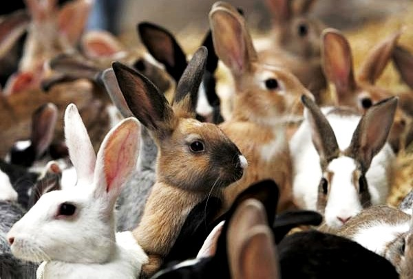

Интересные факты
Самый большой кролик в мире, занесенный в книгу рекордов Гиннеса, относится к породе
Ризен (Riesen) и живет в Великобритании. Зовут этого гиганта Дарий. При длине тела
в 1 м 29 см вес животного составляет 22 кг.
В ходе эволюции кроликам досталась роль животных-жертв, имеющих множество врагов,
поэтому скорость кролика, убегающего зигзагообразными прыжками, может достигать 30 км/ч,
а отдельные особи могут бежать со скоростью до 56 км/ч. В случае опасности кролики
барабанят по земле задними лапами, предупреждая сородичей об угрозе. Будучи схваченным,
кролик пускает в ход свое оружие — удары мощных задних лап и довольно чувствительные
укусы острых резцов.
Кролики являются одним из основных видов животных-вредителей в Австралии. Завезенные
в 1859 году, плодовитые кролики поставили под угрозу всю экосистему страны. Для борьбы
было использовано множество средств, начиная от заборов длиной в сотни миль и
заканчивая отстрелом и помощью хорьков. В итоге единственным эффективным способом
контроля популяции стало распространение вирусных заболеваний кроликов.
Кролики — отличные прыгуны, рекорд самого длинного кроличьего прыжка составляет ровно 3 м.
По подсчетам специалистов, если не контролировать плодовитость зверьков в природных
условиях, то через 90 лет на каждого кролика будет приходиться всего лишь 1 квадратный
метр земли.